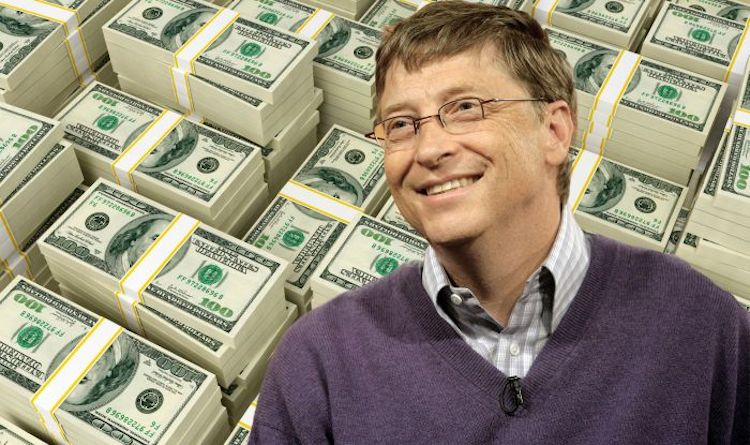

Bill Gates is bekend geworden door het merk Microsoft. Hij heeft het zelf gepubliceerd. Het is zelfs zo groot en beveiligd dat als iemand het zelfs probeerd te hacken het niet lukt. Het heeft een heel groot sowtware en het wordt steeds weer geupdated. Dat maakt Bill Gates ook daarom multimiljardair! In mei 2013 raamde persagentschap Bloomberg zijn vermogen op 72,7 miljard dollar, wat hem op hun Bloomberg Billionaires Index opnieuw de rijkste mens ter wereld maakt.[7] In dezelfde maand zette ook Forbes hem opnieuw bovenaan de lijst van rijkste mensen, met een geschat vermogen van 69,9 miljard dollar.[8] In maart 2014 schatte Forbes het vermogen van Gates op $ 76 miljard, waarmee hij wederom de rijkste man ter wereld zou zijn. Carlos Slim zou op een tweede plek staan met $ 72 miljard.[9] Volgens Bloomberg en Forbes stak Jeffrey Y. Bezos, onder meer de baas van Amazon, Gates voorbij. Het vermogen van Bezos zou 90,9 miljard dollar bedragen, dat van Gates 90,7.[10] Jeff Bezos is anno 2018 de rijkste persoon ter wereld, met een fortuin van 160 miljard Amerikaanse dollar. Hij was de eerste persoon die meer dan 100 miljard dollar vergaarde.
